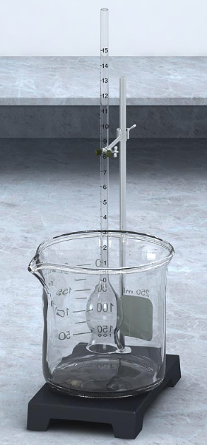

The liquid volume entered is out of the expected range
Key Concepts
- A selectively permeable (semipermeable) membrane only allows certain molecules through and blocks others.
- Osmotic pressure is influenced by changes in nonpermeable solute concentration.
- Higher nonpermeable solute concentration increases the amount of water that will cross the membrane.
Overview
- In this simulation, you will examine osmosis using thistle tubes that are fitted with membranes over their large, open ends.
-
You will place different solutions in thistle tubes and beakers, and then record changes in the volume of water moved by osmosis.
Before you begin
Make sure you are familiar with the following terms
-
Osmosis
Osmosis is the movement of water across a selectively permeable membrane from a hypotonic solution into a hypertonic solution.
-
Osmotic Pressure
The pressure that results from the movement of water by osmosis.
-
Thistle tube
A thistle tube is a long tube of glassware with an open round reservoir at one end.
Thistle tube in a beaker
